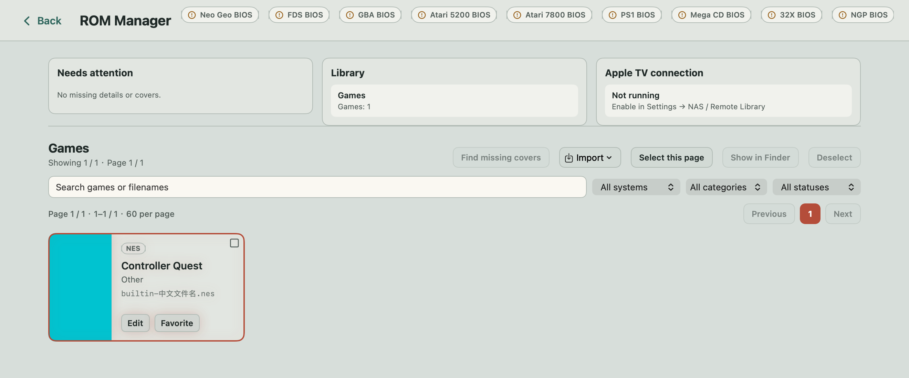
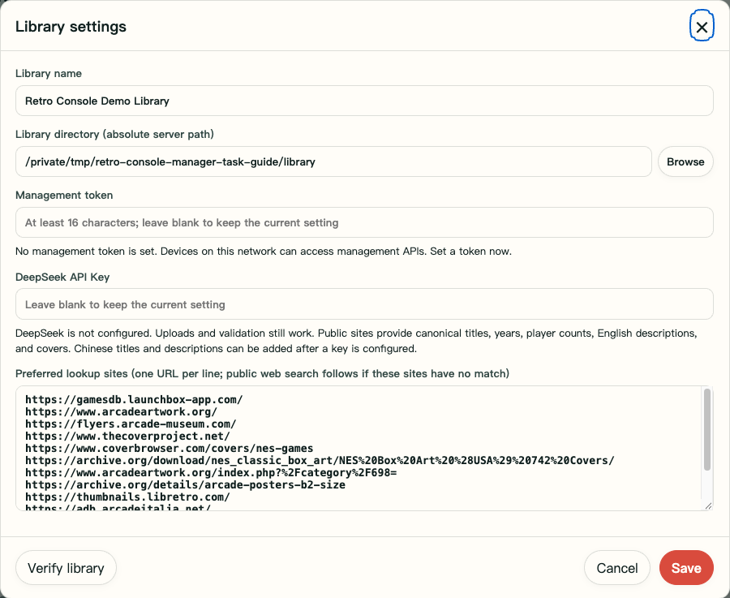
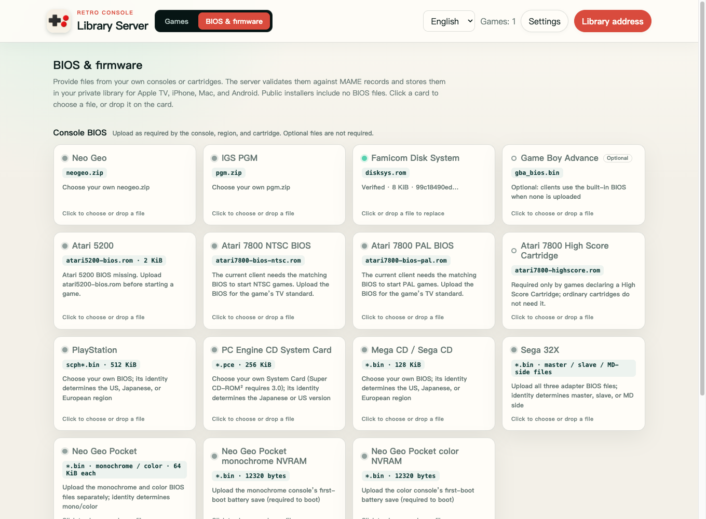

STEP BY STEP · LIBRARY SERVER 1.3.4
Install your app.
Manage your game library.
Play and manage local ROMs directly with the Mac app, or keep a shared library on a computer or Synology NAS. Choose your setup below, then import games and connect your devices.
WINDOWS · MACOS · LINUX
01 Install on a computer
Install and start Docker
On Windows or macOS, install Docker Desktop, open it, and wait for its engine to start. On a Mac, choose the version for your Apple silicon or Intel processor. On Windows, enable WSL 2 and any other components requested by the official installer. On Linux, install Docker Engine and the Compose plugin.
Official Docker installation guide ↗ · Windows ↗ · macOS ↗
Open a terminal, or PowerShell on Windows, and run both commands below. The engine is running when the second command shows server information.
docker compose version docker infoDownload and extract the server ZIP
Open the server download page and choose “Computer · Docker Compose.” Extract the entire ZIP into a folder you plan to keep. Check that it contains
compose.yaml,Dockerfile,app, andREADME.md. Do not run it from inside the ZIP.Create a library folder
Create a folder named
librarynext tocompose.yaml. This stores your game packages, BIOS files, and covers. To use an existing folder instead, copy.env.exampleto.envand setFC_LIBRARY_HOST_PATHto that folder’s absolute path. On Windows, use a path such asD:/Games/FCEmulatorLibrary.The file must be named
.env, not.env.txt. If Docker Desktop asks for permission to access the folder, allow it.Start the server and open its management page
On Windows, right-click an empty area in the extracted folder and choose “Open in Terminal,” or use PowerShell. On a Mac, open Terminal, type
cdfollowed by a space, drag the extracted folder into the terminal, and press Return. On Linux, choose “Open in Terminal” in your file manager. Make sure the current folder containscompose.yaml, then run:docker compose up -d --build docker compose psThe first build needs internet access to download the base image. Once
serveris running, openhttp://127.0.0.1:8282/in a browser on the same computer, then continue with library setup. By default, only this computer can connect. Complete local network setup before connecting a TV.
SYNOLOGY DSM 7
02 Install on Synology
Get Node.js and the public SPK
In DSM Package Center, install Node.js 18 or later for your NAS. The startup script can locate the Node.js 18, 20, and 22 packages. Then download the Synology SPK from the server download page. The public package is marked
noarchbecause it does not include a Node runtime; your NAS still needs a working Node.js installation.Install the package manually
In “Package Center → Manual Install,” select the downloaded SPK. Check that its name is Retro Console Library, then follow the installation wizard. The standard package uses management port 8282.
Create a library folder and grant access
In DSM “Control Panel → Shared Folder,” create a shared folder for your game library, for example
FCEmulatorLibrary. Open its “Edit → Permissions” settings, switch the user type to System internal user, and grant theFCEmulatorLibraryaccount Read/Write access. Apply the change.This is the package’s account, not your DSM administrator account. If you grant access only to a subfolder, the package account must also be able to pass through its parent folders. Granting access only to the deepest folder may still result in “Permission denied.” A dedicated shared folder makes it easier to avoid granting access to unrelated files.
Start the server and open its management page
Start the service in Package Center and click “Open,” or enter
http://your-NAS-LAN-IP:8282/in your browser. Use the server’s port, not DSM’s 5000 / 5001 ports. If the DSM firewall is enabled, allow TCP 8282 from your trusted local network.In the web page’s “Settings,” choose the actual library path on the NAS. This might be
/volume1/FCEmulatorLibraryor/volume2/FCEmulatorLibrary, depending on its storage volume. Do not enter a Mac’s/Volumes/…mount path as a NAS path.
MAC APP · LOCAL OR SYNOLOGY
03 The Mac app: manage local games or connect to Synology
To play on your Mac, you only need the Mac app. Synology and Docker are optional. Manage your own local ROM library directly, or connect the Mac to a library you already keep on Synology. Start with the local steps below, then follow the Synology connection steps if needed.
Install the Mac app
Download the macOS DMG from the client download section. The current build requires an Apple silicon Mac running macOS 14 Sonoma or later. Open the DMG, drag the app into Applications, then open it from Applications. Local use does not require the Docker installation steps below.
Choose your ROM folder
In the app, open “Settings → NAS / Remote Library.” Use the switch between the server address and local folder panels to select local mode, then click “Choose Folder…”. For a new library, choose an empty folder you created, such as “Retro Console Games.” The app prepares an empty folder as a portable library. You can also select an existing ROM folder to read its files in place. After adding or removing files in Finder, click “Refresh” here.
The folder you choose is your public ROM folder, not the app’s private index location. The app manages its index, caches, and game saves in its own storage; you do not need to select another path for them. When you use the portable library created from an empty folder above, imported games are organized and written into that folder. When you explicitly set or find missing covers, covers are also written back in the public library format. Back up your ROM library, while remembering that this folder does not contain all of the app’s settings and saves.
Import and organize games in ROM Manager
In local mode, open “ROM Manager” from the game library, then choose “Import → ROM files…” and select ROMs you own or are authorized to use. The importer can recognize a ZIP / 7z containing one cartridge file. For an existing portable game package, use “Game packages (.zip / folders)…”. For a complete library containing a root
library.json, use “Library folder…”. A ZIP containing several unrelated games is not a game package.Check the game list and any specific import errors. Search, mark favorites, or click “Edit” to change a title, category, or cover. “Find missing covers” searches public cover sources. Your original titles and filenames are preserved; switching the interface language does not translate or rewrite your game metadata. The ROM format help below explains common extensions and containers. Its format table describes the server upload endpoint, so it is not a guarantee that every listed game runs on the Mac.
Add any required BIOS files, then try the game
Under “ROM Manager → Import,” choose the matching BIOS or firmware entry, such as FDS BIOS or PlayStation BIOS. Use files you are authorized to use, and follow the BIOS & firmware help for the right model and region. Ordinary NES cartridges do not need the FDS BIOS. A BIOS file is not a game cartridge, and renaming a file does not make it pass validation.
Return to the game library and start the game. A successful import means the file was added; reaching gameplay also depends on the BIOS, cartridge hardware, and the current engine’s compatibility.

Already using Synology? Connect your Mac to it
Get your Synology library address
Complete Synology installation and library setup on the NAS. Copy “Library URL” from the management page, for example
http://your-NAS-LAN-IP:8282/library/. Keep the Mac and NAS on a local network where they can reach each other. Include/library/; this is not the DSM sign-in address.Switch to server mode and add the library
On the Mac, return to “Settings → NAS / Remote Library” and switch the middle control back to server mode. Enter the “Server address.” If the server has an access token, select “Bearer Token” and enter the same token. Click “Test Connection,” then “Add Library.” This follows the client connection steps and does not require Docker on the Mac.
The local folder and server are alternative library modes. Server sync pauses while the local folder is active and can continue after you switch back. Switching does not automatically merge the two libraries. Open “Manage Sources” to view and sync saved sources.
FIRST SETUP
04 Choose a folder and upload games
In version 1.3.4 and later, choose Chinese or English at the top right of the management page. The first visit follows your browser language, and later visits remember your choice. Changing language reloads the current page. Finish any upload or save, and close open dialogs before switching.
Choose a folder the server can access
Click “Settings” at the top right of the management page. Enter or browse for the “Library directory (absolute path on the server).” For Docker, enter
/library. This is the path inside the container;FC_LIBRARY_HOST_PATHin.envselects the actual folder on your computer. On Synology, use the/volume…/shared-folderpath you checked earlier.Set the “Library name,” save, and wait for the page to refresh. Start with an empty folder for a new library. For an existing portable library, choose the folder containing its root
library.json. Back up existing files first.Set a management token
In “Settings,” enter an access token of your own with at least 16 characters in “Management token,” then save. Uploading, deleting, and changing settings will require this token. When using another browser, enter the same token when prompted. It is separate from your DSM password and DeepSeek API key.
You do not need a DeepSeek API key if you do not use online metadata lookup. The public package contains no one’s keys or accounts.
Upload a ROM you own
Return to “Games.” Click “Upload ROM” to select a file, or drag it into the upload area. ZIP / 7z files are identified from their contents; the filename alone does not identify the console. Keep arcade sets’ original driver filenames. If an Atari cartridge needs extra information, the page will ask for its video standard, cartridge board, or controllers. Enter the details of the actual cartridge.
Check both the upload result and the game list. “Added” or “Already exists” means the game was imported or a duplicate was found. If startup dependency warnings remain, continue to BIOS & firmware. A successful upload does not prove that the game can run.


BIOS & FIRMWARE
05 Add the required startup files
The public installers contain no ROMs or console BIOS files. Open “BIOS & firmware” in the management page and use the appropriate card to select files you own. The server checks their contents against known identities. Invalid files show an explanation and do not overwrite previously verified valid files.
| Console or game | What to provide |
|---|---|
| Famicom Disk System (FDS) | disksys.rom. Ordinary NES cartridges do not need it. |
| Neo Geo / IGS PGM | Upload neogeo.zip for Neo Geo or pgm.zip for PGM. |
| PlayStation / Mega CD | A BIOS matching the game’s region. The file’s identity determines whether it is Japanese, US, or European. |
| PC Engine CD | A valid System Card. Super CD-ROM² games require version 3.0. |
| Sega 32X | All three BIOS files: master SH-2, slave SH-2, and Mega Drive side. Upload each using the cards. |
| Neo Geo Pocket | The BIOS and initial battery-backed memory image (NVRAM) for the matching monochrome or color model. |
| Atari 5200 / 7800 | The 5200 uses atari5200-bios.rom. Current 7800 clients need the NTSC or PAL BIOS for the game’s video standard. The High Score Cartridge (HSC) file is needed only when the cartridge declares that accessory. |
| Game Boy Advance | An external gba_bios.bin is optional. Clients use their built-in implementation when none is installed. |
| Super NES | The IPL startup program and some coprocessors have built-in implementations. Upload external firmware only when the cartridge requires it, such as ST011 / ST018 cartridges. Renaming a different file of the same size does not make it valid firmware. |
If an uploaded ROM lacks a startup dependency, the page keeps a warning explaining that the ROM has been imported but needs more files. Later successful uploads do not hide it. Click “Go to BIOS & firmware,” add the missing files, then upload the ROM again to check. Earlier warnings describe the state at upload time; you can dismiss them manually. CPS2 games also need a matching .key, which can be included in your ROM ZIP.

LOCAL NETWORK
06 Allow access from your local network
Set your management token before allowing TVs or other devices to connect. Keep the server and clients on a local network where they can reach each other. Guest Wi-Fi and router device isolation can block connections.
Docker: bind to your computer’s local network address
Find your computer’s local IPv4 address in its network settings. Edit
.envin the extracted folder. InFC_LIBRARY_BIND_IP=127.0.0.1, replace the address with that computer’s actual local network address. Keep the port asFC_LIBRARY_PORT=8282. Then run this from the same folder:docker compose up -dIf you use an existing library, keep
FC_LIBRARY_HOST_PATHpointing to its original folder on the host computer. Do not remove that setting. After changing the bind address, openhttp://your-computer-LAN-IP:8282/in your browser. If the service is bound only to that address, 127.0.0.1 may no longer work.Synology: check the port and firewall
The native SPK uses port 8282 on the NAS when started; it normally does not need Docker’s bind settings. If you use DSM firewall rules, allow TCP 8282 only from your trusted local network. Do not forward this port to the internet.
Check from another device first
On another computer or phone on the same network, open the server’s local network address with port 8282. Once the management page opens, configure the client. On a client,
127.0.0.1refers to that client itself, not a different computer or NAS.
IPHONE · ANDROID TV · APPLE TV · MACOS
07 Connect a client to your library
Install the iPhone or Apple TV app from the App Store. The iPhone app requires iOS 17.0 or later.
Get the library’s root address
Open the management page using the server’s local network address and click “Library address” at the top right. Clients use an address such as
http://your-server-LAN-IP:8282/library/. This differs from the management page’s root address: keep the trailing/library/. You do not need to addlibrary.json.Enter the address and authentication in your client
On Android TV, Apple TV, or macOS, open “Settings → NAS / Remote library” and enter the “Server address.” If the server has a token, select “Bearer Token” authentication and enter the same access token used by the management page. Do not enter your DSM username or password as the token.
If macOS says that a local ROM folder is in use and server sync is paused, switch back to remote library mode first.
Test and add the library
Use “Test connection” to check the address and authentication, then “Add library” to sync it. For an existing source, use the test or sync actions under “Library sources.” Return to the game list, check that a game downloads, and try starting it. Game compatibility and the required BIOS files still need to be checked in actual use.
HELP · ROM FORMATS
08 Which ROMs can the server accept?
A ROM is a game file you have dumped; ZIP / 7z files are containers that hold files together. The types below are accepted by the 1.3.4 server’s upload interface. This does not mean every game will run, or include formats supported only by an individual client. Choose a library folder in “Settings” before uploading.
Cartridge and disk games
“Single-file ZIP / 7z” below means the archive contains one game file in the listed format. Keep covers, readme files, and other games out of the same archive. The server validates the contents instead of treating every ZIP as an arcade set. The file may be inside a subfolder. Common system metadata is ignored; unsafe paths and damaged archives are rejected.
| Console | Raw files and members inside ZIP / 7z | Identification and dependencies |
|---|---|---|
| NES / Famicom | .nes; single-file ZIP / 7z supported | The NES header and mapper (cartridge hardware type) are read. The client must still support that mapper. Ordinary cartridges do not need the FDS BIOS. |
| Famicom Disk System | .fds, .qd; single-file ZIP / 7z supported | Listed under NES and run through FDS mapper 20. Requires disksys.rom, unlike NES cartridges. |
| Super NES / Super Famicom | .sfc, .smc; single-file ZIP / 7z supported | Cartridge chips are checked. IPL and some coprocessors have built-in implementations; supply external firmware when the game requires it. |
| Mega Drive / Genesis | .bin, .md, .gen; single-file ZIP / 7z supported | 32X games can use these extensions too. The header is checked to distinguish them. |
| Sega 32X | .32x, or .bin / .md / .gen whose contents identify a 32X game; single-file ZIP / 7z supported | Requires all three adapter BIOS files: master SH-2, slave SH-2, and Mega Drive side. |
| Master System | .sms; single-file ZIP / 7z supported | Validated against console header and cartridge requirements. |
| Game Gear | .gg; single-file ZIP / 7z supported | The cartridge contents are checked for this console. |
| SG-1000 | .sg; single-file ZIP / 7z supported | Validated against SG-1000 cartridge requirements. |
| Game Boy / Game Boy Color | .gb, .gbc; single-file ZIP / 7z supported | The header determines GB / GBC, not the extension alone. Unsupported cartridge controllers are rejected. |
| Game Boy Advance | .gba; single-file ZIP / 7z supported | An external BIOS is optional. Clients have a built-in implementation when none is installed. |
| WonderSwan / WonderSwan Color | .ws, .wsc; single-file ZIP / 7z supported | One system entry; cartridge contents determine the model. |
| Neo Geo Pocket / Color | .ngp, .ngc; single-file ZIP / 7z supported | Provide the BIOS and initial NVRAM for the matching model. |
| PC Engine / TurboGrafx-16 HuCard | .pce; single-file ZIP / 7z supported | The cartridge entry is separate from CD games that need a System Card. A System Card itself is identified as firmware. |
| Atari 2600 | .a26; single-file ZIP / 7z supported | Needs accurate video standard, cartridge board, and controller declarations. The page asks for missing details; the game title cannot determine its mapper. |
| Atari 5200 | .a52, including validated CART headers; single-file ZIP / 7z supported | Declare the board when it is ambiguous. A 2-port or 4-port model can be specified. Requires the 5200 BIOS. |
| Atari 7800 | .a78, including validated A78 headers; single-file ZIP / 7z supported | Headerless images must match the known-cartridge catalogue; A78 headers must be valid. Requires the matching video-standard BIOS, and HSC when the cartridge declares it. |
Atari .bin files have an extra restriction: the server identifies the Atari console only when the file’s content fingerprint matches the known-cartridge catalogue. An unknown .bin cannot be identified by its name alone, and Mega Drive also uses this extension. Use the correct cartridge format for the console and enter the real video standard, board, and controller details when prompted. Guessing a board cannot make an unsupported cartridge playable.
Disc games
| Console | What you can upload | What to check |
|---|---|---|
| PlayStation | .fcps1; CD images in .chd format; ZIP / 7z containing CUE + BIN, CHD, or CloneCD CCD + a matching IMG (and optional SUB) | Identified from the disc. Requires the BIOS for its region. |
| Mega CD / Sega CD | .fcmcd; CD images in .chd format; or ZIP / 7z containing CUE + BIN, CHD, or CloneCD CCD + IMG (and optional SUB) | Disc contents identify it as Mega CD; an arbitrary BIN is not a disc image. Requires the BIOS for its region. |
| PC Engine CD | .fcpcecd; CD images in .chd format; or ZIP / 7z containing CUE + BIN, CHD, or CloneCD CCD + IMG (and optional SUB) | Identified from disc contents. Requires a valid System Card; Super CD-ROM² games need 3.0. |
A .cue file lists the tracks; it is not the game data itself. Put it and every BIN it references into the same ZIP / 7z, keeping their relative paths. Do not upload just the CUE or a raw BIN as a disc. Multiple discs for the same game can share one archive, with one CUE / CHD / CCD per disc. Do not mix these layouts or combine different games in one archive. .fcps1 / .fcmcd / .fcpcecd are this project’s disc package formats; changing a filename extension does not create one.
Arcade, Neo Geo, and PGM
Use a complete ROM set in .zip / .7z. Keep its original driver filename and the chip files inside; the server checks the contents. A set holds multiple chips for one game, so the single-member rule for cartridge archives does not apply. Neo Geo also needs neogeo.zip, PGM needs pgm.zip, and CPS2 needs a matching .key.
Split clone sets may lack chips from the parent set or device ROMs. They cannot run without those files. Some ZIP clone sets can be completed from a matching parent already in the library. If the parent is missing, upload the correct complete parent set first. Renaming a file or uploading only the clone does not supply the missing data. The current cores do not support every MAME driver or every ROM set revision.
CPS3 uses the separate “CPS3 Arcade” area: upload the MAME game ZIP containing its cartridge BIOS and the matching CloneCD .img disc. The server then installs the game. This raw IMG entry is specific to CPS3, not a general PlayStation IMG upload path. An existing .fcc3 installed-game package from this project can be imported by the server after configuring a library folder. Renaming another file does not make it a valid package.
For unlisted types, do not assume the server can upload them just because a client has a console menu or recognizes an extension. For example, internal Nintendo 64 manifest validation does not mean this web version offers uploads of .z64 / .v64 / .n64.
TROUBLESHOOTING & UPDATE
09 Troubleshooting and updates
Connection refused, or port 8282 will not open
Check that Docker Desktop or the DSM package is running. For Docker, run docker compose ps and docker compose logs --tail 80 server in the extracted folder. If the process exits, resolve the startup error in its logs before checking the firewall. Make sure no other application is using the port and that you are connecting to the server’s local network IP. Only Docker’s default local-only configuration uses 127.0.0.1.
EACCES / permission denied
This is a filesystem permission problem. On Synology, check that the internal system user FCEmulatorLibrary has read/write access to the chosen shared folder and permission to pass through every parent folder. Checking only your DSM login account is not enough. For Docker, check that container UID/GID 1000:1000 can write to the mounted folder and that Docker Desktop is allowed to access it. Adjust only the library folder’s permissions; do not make an entire drive writable by everyone.
The Synology startup log is normally at /var/packages/FCEmulatorLibrary/var/fc-emulator-library.log. If an error refers to a temporary cache, check that the latest server package is installed, then inspect fresh logs after upgrading. An old log entry may not describe the current error.
Wrong processor architecture or Node.js version
The Synology SPK’s noarch label means it does not contain a Node runtime for a fixed architecture; you still need to install one. Install Node.js 18+ for your NAS model in Package Center. Docker Desktop must also match your computer’s Apple silicon, Intel / AMD, or ARM architecture. For an unsupported image architecture or exec format error, check the runtime environment rather than changing file permissions.
No games, failed uploads, or missing BIOS warnings
Check that the “Library directory” is a real path accessible to the server. In Docker, it should be /library. For a failed upload, read the specific error shown for the file. Firmware must pass both size and content identity checks. After a successful upload, resolve any BIOS warnings for the specified console, role, and applicable region. An external GBA BIOS is optional. Ordinary NES cartridges and SNES cartridges that do not require external chip firmware do not need extra BIOS files.
How do I update without losing games or settings?
Back up your library and settings first. On Synology, manually upgrade the same FCEmulatorLibrary package in Package Center, keeping its library and package data. Installing a separate test instance is not an upgrade of the original package.
For Docker, keep your original library, .env, and configuration volume. Update the program and Compose files in your existing installation folder from the new ZIP, then run:
docker compose build --pull
docker compose up -dIf you extract to a different location, make sure FC_LIBRARY_HOST_PATH points to the original library so that ./library does not refer to a new empty folder. docker compose down stops the service. To retain data, do not add --volumes: that option deletes the configuration volume.